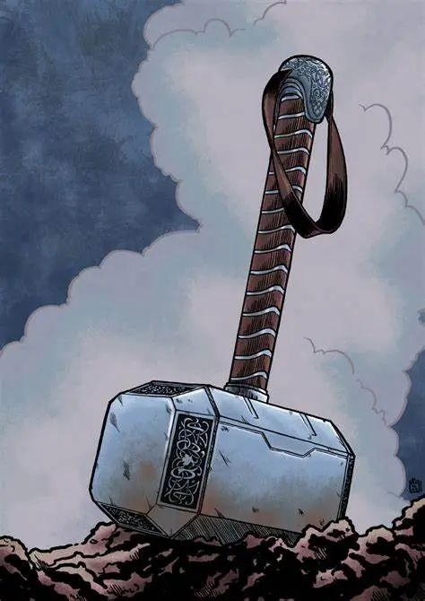
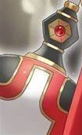
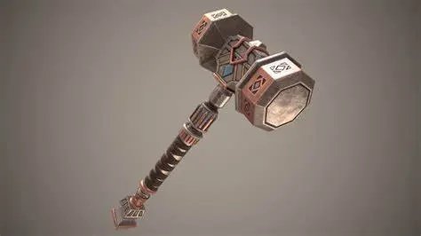
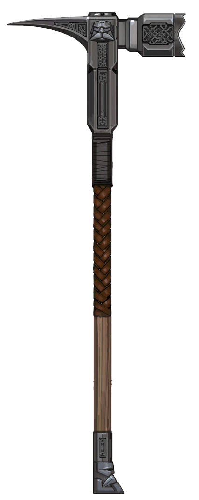

Weapons of Fiction
Mjolnir

Accuracies
The inscribed design in the head and handle of the hammer are commonly found among weapons and shield made by the norse.
the loop which would be used to hang a hammer from either the wall or a belt.
Inaccuracies
The head of the hammer is to large, while hammers used in battle did exist their heads were very different from the ones used at home while Mjonir is clearly a super sized mallet
A real war hammer would usualy have spike on one end of it's head to stab foes with.
The handle is a bit too wide for a real war hammer
Vassal Hammer

Accuracies
the handle (not pictured due to how few images of the vassal hammer exist) is properly wrapped for a weaponised hammer
Inaccuracies
The Head is too big, somewhat exceptible because the vassal hammer is more associated with forging, although the head of its base form is still a bit too big for that.
A real war hammer would usualy have spike on one end of it's head to stab foes with.
Aegis-fang(3e)

Accuracies
almost none
Inaccuracies
The Head is too big.
A real war hammer would usualy have spike on one end of it's head to stab foes with.
the handle has multiple pointed edges that the user could cut themselves on.
Aegis-fang(5e)

Accuracies
The head of the hammer, big enough to deal some serious damage, small enough to not create much drag, heavy enough to dent armour, light enough to swing at high speeds.
The spike on the back of the head is used to stab in to foes and week point in armour, along with focus all the force of the hammer on an even smaller point than usual.
the handle is well crafted and designed to help the wielder grip it, and prevent the weapon from slipping from its wielders hands.
Inaccuracies
the face sticking out of the side of it, would be impractical and incredibly difficult to make.